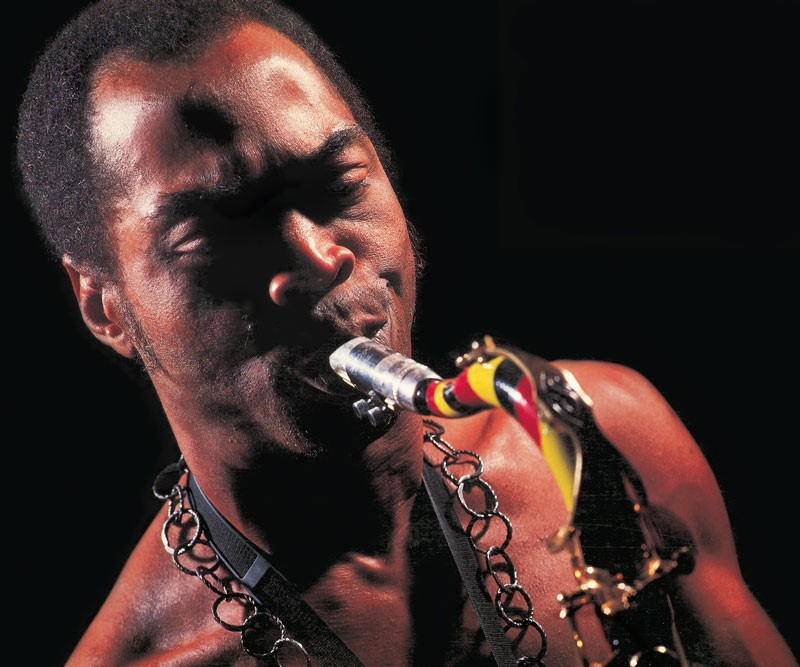
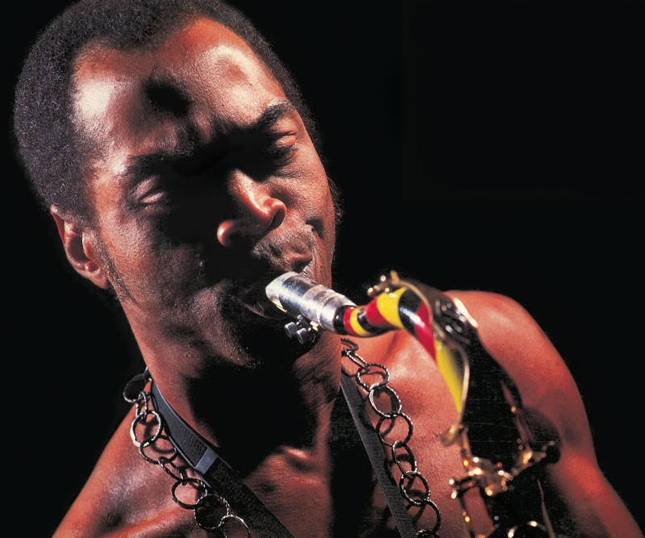
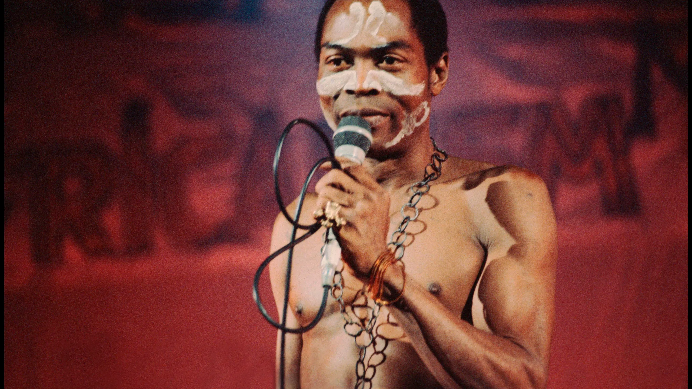

My favorite music - Afrobeat
People find it difficult to define music, some part of the world says music
heals the soul. which i believe it does, while some people view music as
noise when it's not organised but when it’s organised it’s one of the most
beautiful sounds ever, My favourite music is Afrobeat a music genre
originated from West Africa (Nigeria).
It is one of the most amazing music
genre out there and it's so widespread that even global stars from all
around the world are coming in to tap some African juice.
Here's a quick history on Afrobeat which was founded by Fela Anikulapo Kuti in the late 1960s.
Fela Anikulapo Kuti was born in 1938 on 15 October 1938, in Abeokuta, Colonial Nigeria.
Afrobeat was influenced by a combination of different genres, e.g highlife, fuji, and jùjú,
as well as Yoruba vocal traditions, rhythm, and instruments.Afrobeat isn’t just music,
it’s a cultural force—a fusion of West African traditions, jazz, funk, and soul.
 


Fela Anikulapo Kuti (Founder of Afrobeat).
Here's why i vibe with Afrobeat
- The rhythm is unmatched.
- The pioneer of Afrobeat Fela challenged a lot of politicians thorugh his song.
- One of his song called 'waka waka' is literally an anthem on the street on Lagos.
- When you hear the beat of an Afrobeat song it's impossible to not be in motion.
I have visited the Afrika Shrine before (Fela Shrine) it's a trendy place in Lagos
famous for the songs and the vibes, it's an awesome place to feel the real vibes of Afrobeat.
A lot of Afrobeat singers are always present there and it's a dance till dawn kind of place.
My personal experience with the vibes of Afrobeat
My love for music dates back to when I was a kid, My mum always played songs (Traditional Yoruba Songs) every morning even if I didn't have to listen to them,
I had no choice but to listen to them because she played them so loud! Along the line, I started listening to all genres of music just to find my vibes.
Then one day I was walking on the street when I heard one of Fela's songs called ZOMBIE
it's an interesting song where he was abusing corrupt politicians of Nigeria the rhythm of the song is so beautiful the drums are amazing.
I can't express how I felt but it was an interesting feeling! Ever since then, I've been a fan of Afrobeat.
Afrobeat is a mood-changer for me. Whenever I hear the drums, I feel so amazing,The rhythm of Afrobeat is rare and
not a rhythm you will find in every music genre. It's present in Afrobeat only!